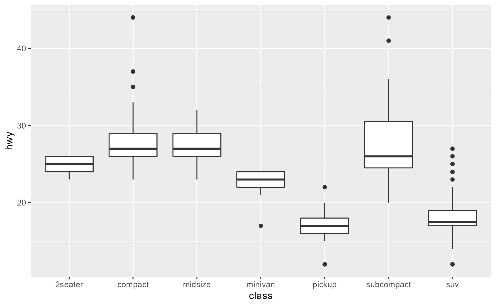
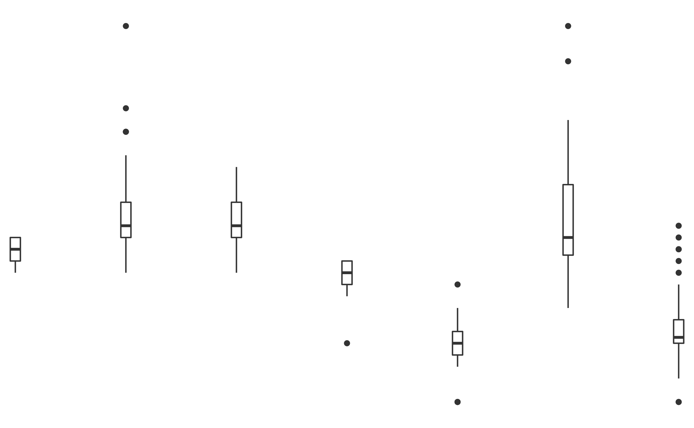

Retrieve the trace dump created by ggtrace()
last_ggtrace() clear_last_ggtrace() global_ggtrace() clear_global_ggtrace() global_ggtrace_state(state)
Arguments
| state | If missing, returns whether the global tracedump is currently active.
The global tracedump is inactive by default ( The global tracedump can be turned on/off by setting |
|---|
Value
list
A logical indicating the current state of the global trace dump.
If state is provided, changes the state first, then returns the state invisibly.
Details
last_ggtrace()retrieves the last trace dump created byggtrace()- i.e., from the last time the trace has been triggered.global_ggtrace()is a list of trace dumps collected across multiple traces, and is recommended for use withggtrace(once = FALSE)when you expect a trace to be independently triggered multiple times (for example, when you are tracing a (compute/draw)_group method and there are multiple groups, or when the plot has multiple layers which all call the method being traced).
When a trace dump is pushed to global_ggtrace() upon exiting a trace, it gets named after the ggproto method
and a hex code identifying the method's runtime environment, e.g. "Stat$compute_layer-00000267437FD3D8".
clear_global_ggtrace()sets the value ofglobal_ggtrace()toNULLand returns it.
See also
Examples
library(ggplot2) # Inspect last tracedump ggtrace(StatSmooth$compute_group, trace_steps = -1, trace_exprs = quote(head(prediction)))#>#>#>#> #> [Step 13]> head(prediction) #> x y ymin ymax se flipped_aes #> 1 10.40000 232.2531 201.8649 262.6414 14.87963 FALSE #> 2 10.69747 229.6265 199.9139 259.3392 14.54880 FALSE #> 3 10.99494 227.0000 197.9569 256.0430 14.22094 FALSE #> 4 11.29241 224.3734 195.9934 252.7534 13.89627 FALSE #> 5 11.58987 221.7468 194.0230 249.4707 13.57502 FALSE #> 6 11.88734 219.1203 192.0450 246.1956 13.25743 FALSE #> #> Call `last_ggtrace()` to get the trace dump.#>last_ggtrace()#> [[1]] #> x y ymin ymax se flipped_aes #> 1 10.40000 232.2531 201.8649 262.6414 14.87963 FALSE #> 2 10.69747 229.6265 199.9139 259.3392 14.54880 FALSE #> 3 10.99494 227.0000 197.9569 256.0430 14.22094 FALSE #> 4 11.29241 224.3734 195.9934 252.7534 13.89627 FALSE #> 5 11.58987 221.7468 194.0230 249.4707 13.57502 FALSE #> 6 11.88734 219.1203 192.0450 246.1956 13.25743 FALSE #>ggtrace( StatSmooth$compute_group, trace_steps = -1, trace_exprs = quote(prediction), verbose = FALSE )#>#>#>#>#> x y ymin ymax se flipped_aes #> 1 10.40000 232.2531 201.8649 262.6414 14.87963 FALSE #> 2 10.69747 229.6265 199.9139 259.3392 14.54880 FALSE #> 3 10.99494 227.0000 197.9569 256.0430 14.22094 FALSE #> 4 11.29241 224.3734 195.9934 252.7534 13.89627 FALSE #> 5 11.58987 221.7468 194.0230 249.4707 13.57502 FALSE #> 6 11.88734 219.1203 192.0450 246.1956 13.25743 FALSE# Inspect an accumulation of trace dumps global_ggtrace_state() # global tracedump is inactive by default since v0.4.3#> [1] FALSEglobal_ggtrace_state(TRUE)#>clear_global_ggtrace()#>#>#>#>#>#>#>#>#>#>#>#> [1] 7boxplot_group_tracedump <- unlist( boxplot_group_tracedump, recursive = FALSE, use.names = FALSE ) patchwork::wrap_plots(boxplot_group_tracedump, nrow = 1)clear_global_ggtrace()#>global_ggtrace()#> NULLglobal_ggtrace_state(FALSE)#>